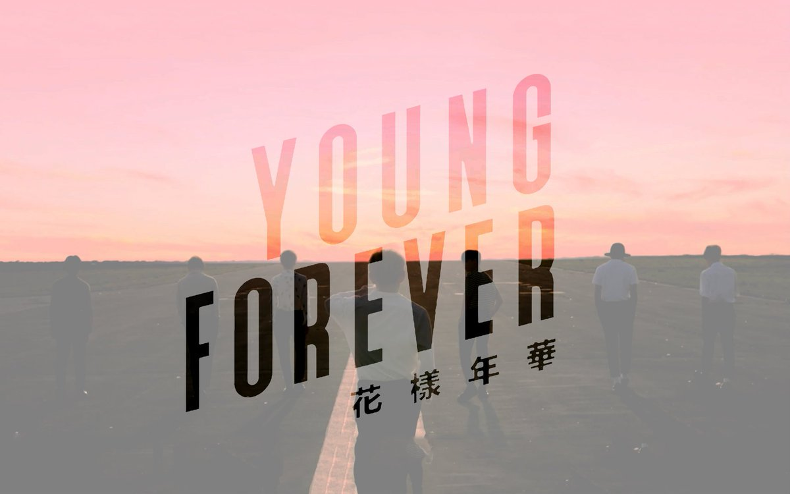

花樣年華
Y o u n g F o r e v e r

故事內容：
V 與家人關係不好，他的父亲常常酗酒，更嚴重的是他會家暴。 後來在一次 V 的父亲再次家暴的时候， V 用破碎的啤酒瓶子殺死了自己的父亲，於是他打電話找七位朋友中與他關係最好、如同他哥哥的 RM 求助，RM 和其他的五個兄弟陪了他一段時間，大家一起為了散心去了海邊，在海與天交接的地方，初陽升起的那一刻，大家坐在在一排欣赏美麗的風景那刻，而 V 跳海自殺了。
在這場事故中， RM 深深地自责，當他聽到 V 殺了自己的父亲那一刻瘫坐在電話亭中，也知道自己一定要好好安慰 V ，於是帶着他到處去噴油漆，讓他旺季自己做過的事和犯下的錯，也許正因为如此， V 可能才更怕連累了自己的朋友而選擇自殺， RM 在自責期間，在自己工作的加油站中被一位客人不尊重的待遇，於是丟下菸蒂炸了自己和工作的加油站，自殺了。
在 RM 死後，巨大的悲傷讓其他的五個人都覺得十分痛心、不敢相信及面對，於是過於難過的 Suga 悲憤地摔著家具、怒吼，年紀最小的 Jung Kook 與 Suga 關係最好，他希望 Suga 不要太過難過，但是 Suga 實在無法接受現實到不能自控，就跟 Jung Kook 起了爭執兩人在爭打的過程中， Suga 砸碎了镜子。難過的 Jung Kook 到街上去排解自己的難過不小心碰到了混混把他打了一頓，但這時的他已經麻木了，所以根本不在乎也不還手，最後在過馬路的時候，不小心被 Jin 的車撞死了。知道 Jung Kook 意外身亡的 Suga 在自責和雪上加霜的悲痛中，將汽油倒在房間，點燃了火，自焚身亡了。
而 J-Hope 患了嗜睡症，需要藥物來治療，但在與朋友同歡期間，不重視自己的病情，只想歡愉其中，於是就這樣在不規律的治療期間，使得自己的身體到了極限，當他走在橋上時，就這樣睡著了，倒在了路邊，只是再也不會醒來了 ... ，而與 J-Hope 關係最好的 Jimin 在失去了那麼多好朋友相繼死亡之後，巨大的悲痛深入了他的心，於是他在浴缸里灌滿水，將他們去海邊的合照燒毀，祭奠死去的朋友也祭奠自己，在一場大哭後將自己溺死在了充满浴缸的水中。
就這樣六个好友接連死後，悲愴給年紀最大的 Jin 帶来的是什么呢？他不能再自殺，他不能不自杀，他清楚的記得 RM 在他們去海邊玩之前，在玻璃上寫給 Jin 也是寫給 V 的那句「 要活下去 」，他不能死，但是生不如死，於是他把卧室關閉，將百合花燃燒，百合花燃燒後會讓人產生精神迷幻， Jin 在迷幻中，一個人開車再次去了海邊，他在幻覺中與其他的六個人开心的玩耍，在幻覺中 J-Hope 把藥都倒在了火中，再也不用吃藥了，在大街上只是昏迷不是死去， RM 扔在加油站的不是菸而是棒棒糖不会爆炸， Jung Kook 將 Suga 打算點燃旅館的打火機吹熄了， Suga 没有死還跟他拍了一張照片，並被 RM 放在了汽車抽屜裡，在幻覺中大家在路路洞里放肆的擋在路的最前面，一群人下車大鬧，把别的車都噴上油漆，把飲料倒在别的車上， Jung Kook 並沒有被他自己撞死，看到 V 没有跳海自殺，而是跟 RM 噴油漆的时候被警察逮捕了，被抓進了監獄坐牢而不是死了，Jimin 不是溺水而死，而是他们一群人鬧的時候把 Jimin 架到浴缸里面用水跟他玩鬧...一切的一切都在幻想中，他很開心，一路上他開著車到了海邊，他在欣賞海的時候，拿出了幻想中 RM 給他跟 Suga 拍的照片，當他拿出来的时候，百合花燃烧后帶来的幻想才結束，他清醒了，他終於發現，照片中只有他一个人，原來這一路上都是他自己，是他自己堵在路洞的前面不讓後面的車過去，然後為了帶朋友們快逃才開車走的，他自己去了海邊旅遊，拍了照片，他自己去了照相館，擺好了椅子幻想是七个人照的合影，但其實也只有他一个人罷了...而這時他也已經將車開到海上...跟著自殺了...。